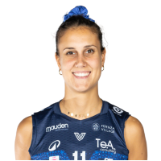
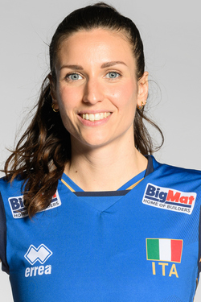
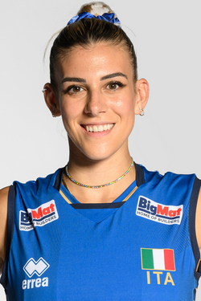
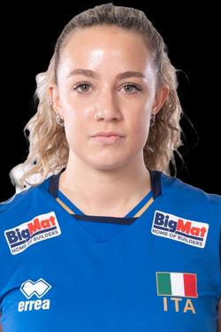

La squadra femminile
- Anna Danesi - Capitano
-

- Data di nascita:
- Luogo:
- Brescia
- Squadra:
- Pro Victoria
- Ruolo:
- Centrale
- Altezza:
- 196 cm
- Maglia:
- 11
- Maglia in nazionale:
- 11
- Punti totali:
- 43
- Riconoscimenti:
-
- Miglior centrale nel Campionato mondiale femminile under 20 di pallavolo femminile del 2015.
- Miglior centrale nel Campionato europeo femminile di pallavolo 2021.
- Miglior centrale nel Campionato mondiale femminile di pallavolo 2022.
- Miglior centrale di Pallavolo ai Giochi della XXXIII Olimpiade - Torneo femminile, 2024.
Palleggiatrici
- Carlotta Cambi
-

- Data di nascita:
- Luogo:
- San Miniato
- Squadra:
- Pinerolo
- Ruolo:
- Palleggiatrice
- Altezza:
- 176 cm
- Maglia:
- 3
- Maglia in nazionale:
- 3
- Vinti:
- 12
- Note:
-
- Ha fatto parte della squadra "AGIL" durante la stagione 2016/17 e 2022/2023. Dalla stagione 2023/2024 fa parte della squadra "Pinerolo".
- Alessia Orro
-

- Data di nascita:
- Luogo:
- Oristano
- Squadra:
- Pro Victoria
- Ruolo:
- Palleggiatrice
- Altezza:
- 180 cm
- Maglia:
- 8
- Maglia in nazionale:
- 8
- Vinti:
- 105
- Riconoscimenti:
-
- MVP coppa CEV, 2021
- Miglior palleggiatrice, Volleyball Nations League, 2022.
- Miglior palleggiatrice, Volleyball Nations League, 2024.
- Miglior palleggiatrice di Pallavolo, Giochi della XXXIII Olimpiade - Torneo femminile, 2024.
Schiacciatrici
- Gaia Giovannini
-

- Data di nascita:
- Luogo:
- Bologna
- Squadra:
- Megavolley
- Ruolo:
- Schiacciatrice
- Altezza:
- 182cm
- Maglia:
- 17
- Maglia in nazionale:
- 27
- Punti totali:
- 10
- Riconoscimenti:
-
- Miglior Sportiva 2024, San Giovanni in Persiceto
- Collana d'Oro al merito sportivo